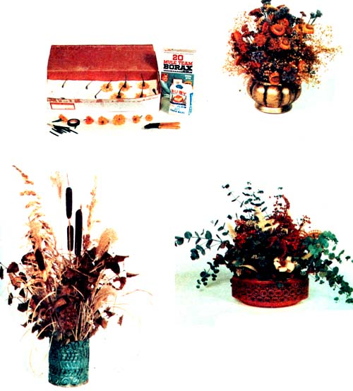

A winter bouquet is a delight to make, can brighten any room, 41. and-as I've found-can enrich your bank account too! Furthermore, such floral arrangements (at least the way 1 put them together) need cost you nothing but a little time and effort . . . yet, if assembled with taste and care, can sell for anywhere from $1.25 to $50.00 each!
If you can see beauty in the natural things that are freely available to all, you'll soon discover that the raw materials for your winter bouquets are everywhere: along roadsides, in fields, down country lanes, and in fence rows. (Carry clippers, scissors, gloves, and a basket in your car at all times. Who knows when you'll sight something special?)
Always get permission, of course, before clipping anything-even "weeds" -from private property (I haven't been turned down yet, but I always make it a point to ask). And then, when you have a "go ahead", bear in mind that the prime time for foraging your floral bouquets' ingredients is during the late morning (after the sun has dried away the dew). Yes, 1 know: It's difficult to resist picking and cutting during other parts of the day when you "just happen" to run across a colorful bunch of these or those that you hadn't expected to find. But control yourself: Your finished work will be the better for it. And experiment! Almost any nonpoisonous flower, plant, or weed is worth a try. I've successfully dried and made arrangements with roses, tulips, buttercups, daisies, lilies, dogwood, delphiniums, zinnias, marigolds, cosmos, sunflowers, corn shucks, cattails, sea oats, lotus pods, birch leaves, grasses, yarrow, baby's breath, goldenrod, and-it seems-hundreds of other growing things. Flowers, as might be expected, need somewhat more careful handling when they're being harvested than--say--corn shucks, cattails, or dried grasses. Pick the blossoms just before they reach full bloom and strip all foliage from their stems. (If they're wilted, the flowers should be revived in water before the leaves are removed . . . but you should never attempt to dry a moist bloom.) Straw flowers, daisies, and other blossoms with heavy heads and frail stems may need a little "special" support before they're dried. But that's easy: Just cut their stems off about one inch from the blooms, wrap wire around the stubs, snip the lengths of wire off as long as you want them, and then wrap the wires with florist's tape.
The easiest way to preserve the plants you collect is by air-drying them. Tie the foliage into small bunches and hang them head down in any warm, dry, dark spot (a shed, garage corner, attic, etc.) that has a gentle circulation of air through it. Don't let the bunches touch! And do leave them hanging for ten days to two weeks (until they feel crisp) . . . then spray them with clear varnish, a matte-finish plastic spray, or any brand of florist's or artist's fixative. The weeds, etc. can then be placed in a cardboard box between layers of paper and stored in a dry place . . . or simply left hanging until you're ready to use them.
Although it's more bothersome, some flowers are best preserved through the use of an agent (rather than air-dried). Silica gel (sold in craft shops) is the most efficient (and expensive!) of these agents. It will dry blossoms in two to five days, is lightweight, won't distort petals, preserves color quite well, and can be used again and again. Sand (sifted to remove foreign matter and large grains) will work as a drying agent too . . . even though its weight may misshape the flowers placed in it. Sand does not do as good a job of preserving a bloom's color, though, and plants placed in sand take from two to three weeks to dry. Another "homemade" agent-equal parts of cornmeal and borax-is lighter than sand and will dry foliage in one to two weeks . . . but does tend to cling to flowers. I use a small paint brush to whisk it away. Silica gel (which can draw moisture from the atmosphere) should always be used in an airtight container. Sand and the boraxcornmeal mixture are not so fussy: A covered cardboard box is all they need. In all three cases, though, your working methods are the same: Spread about an inch of the agent in the bottom of the container, place your blooms in cuplike depressions spaced far enough apart to keep the flowers from touching each other, gently sprinkle each blossom with the agent until the blooms are covered, put a lid on the box or whatever, and leave the container in a warm, dry spot while it does its work. When the plants inside have become brittle to the touch, they can be removed. . . sprayed with a fixative . . . and stored in plastic bags or cardboard boxes until you're ready to use them. Yet another common preservative is made by mixing together equal parts of glycerine and water . . . and then immersing just the stems of the plants you want to keep in three or more inches of the solution (the ends of woody specimens should be crushed first). You'll see the veins of the flowers, etc. placed in this preservative gradually change color as the plants absorb the mixture. When the process is complete (usually in about two weeks), remove the blossoms, small branches, and so on and drain them on newspapers. Dogwood, beech, magnolia, eucalyptus, and ivy do especially well when preserved this way because-unlike other methods of preservation-this one leaves foliage pliable.
Some freshly cut flowers can be dyedfor special effects, or just to enhance their original colors-by immersing their stems (at least two inches) in one cup of water to which one tablespoon of food coloring has been added. Experiment: I've gotten good results with this method with jonquils and Queen Anne's lace, but daisies can be tricky. Once blossoms have been dried, of course, they can be accented with a florist's spray paint (which comes in many colors). An 11-ounce can of the paint currently costs about $3.00 retail . . . but if you go into the dried flower business in a big way, you can save a lot of money by purchasing your supplies wholesale.
Once you've gathered together a generous supply of dried flowers, weeds, and other foliage-plus some fine wire, florist's tape, flower picks, styrofoam, florist's clay, and scissorsthe real fun beginsl Once again, experiment. A pretty bouquet doesn't just happen: It's an artful blend of harmony, balance, and scale . . . a mixture of foliage tints, tones, and shades plus-perhaps-an added selection of pods, cones, and grasses. (A good tip: Always remember that the best arrangements are usually twice the height and width of their containers.) Experiment! Have fun!
Once I started on this craft, 1 became so hooked that I soon had more winter bouquets on hand than I could use. So I offered some of the arrangements to friends for about half the price charged by a florist shop. That turned out to be good advertising: Some of my friends told their friends about my work . . . and they, in turn, told still others. Before I knew what was happening, 1 was being asked to do programs for garden clubs, and teachers were requesting demonstrations for high-school and community-college classes. Eventually the local Arts and Crafts Commission invited me to participate in their annual show . . . where I sold more than $100 worth of bouquets each dayl My little hobby, in other words, has grown into a small-and delightfulhome business. It now nets me an average of $100 to $150 a month for very little effort on my part . . . and I could earn a lot more if I wanted to really work at it. Which I don't (since I already have a fulltime job as a secretary). At present, then, while it's nice that my hobby "pays its way" . . . the money it currently brings in is not as important to me as [a] the boundless possibilitieswhich I may someday want to develop of my little home business, and w [b] the sheer pleasure I derive from recycling the flowers, grasses, pods,.and stalks of summer into beautiful-. winter bouquets.
LEFT, FAR ABOVE: These dried flowers in glass containers (furnished by shop) are ready for pickup by local gift shop,and have earned the author about $10.00 an hour-minus materials, many of which were foraged-for her time.LEFT, ABOVE: Marigolds, covered with mixture of corn meal and borax, dry in about 10 days. LEFT: This $12.50 ar rangement consists of air-dried birch leaves, ornamental grass, sea oats, cattails, and lotus pods in a recycled gallon can. ABOVE: Glycerine-treated baby's breath, straw flowers, yarrow, and blue statice. Price: $15.00. BELOW: Buyers readily pay $15.00 for winter bouquets such as this one made of glycerine-treated eucalyptus, hydrangea, gold enrod (dyed red), corn-shuck "flowers", and rabbit tobacco. If Ms. Guy's arrangements sell for 550.00 or more.
|
 PHOTOS BY LARRY BANKS |
|
|